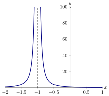

We want to solve limits that have the form nonzero over zero.
Let’s cut to the chase:
A limit is said to be of the form if where is some nonzero constant.
Which of the following limits are of the form ?
Let’s see what is going on with limits of the form . Consider the function While the
does not exist, something can still be said. First note that as Moreover, as
approaches :
- The numerator is positive.
- The denominator approaches zero and is positive.
Hence will become arbitrary large, as we can see in the next graph.

We are now ready for our next definition.
If grows arbitrarily large as approaches , we write and say that the limit of
approaches infinity as goes to .
If grows arbitrarily large as approaches and is negative, we write and say that the
limit of approaches negative infinity as goes to .
Let’s consider a few more examples.
Compute:
First let’s look at the form of this limit, we do this by taking the limits of
both the numerator and denominator: so this limit is of the form . As approaches
:
- The numerator is a positivenegative
number.
- The denominator is positivenegative
and is approaching zero.
This means that
Compute:
First let’s look at the form of this limit, which we do by taking the limits
of both the numerator and denominator. This limit is of the form . Next, we should
factor the numerator and denominator to see if we can simplify the problem at all.
Canceling a factor of from the numerator and denominator means we can more
easily check the behavior of this limit. As approaches from the right:
- The numerator is a positivenegative
number.
- The denominator is positivenegative
and approaching zero.
This means that
Here is our final example.
Compute:
We’ve already considered part of this example, but now we consider the
two-sided limit. We already know that and that this limit is of the form . We also
know that as approaches from the right,
- The numerator is a negative number.
- The denominator is positive and approaching zero.
Hence our function is approaching from the right.
As approaches from the left,
- The numerator is negative.
- The denominator is negative and approaching zero.
Hence our function is approaching from the left. This means
Some people worry that the mathematicians are passing into mysticism when we talk
about infinity and negative infinity. However, when we write all we mean is that as
approaches , becomes arbitrarily large and becomes arbitrarily large, with taking
negative values.